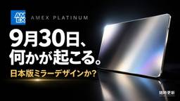
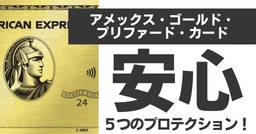
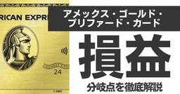
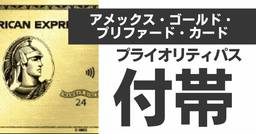
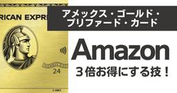

クレカで妄想トラベル
https://www.tokutakublog.com
本ブログ「クレカで妄想トラベル」は、マリオットボンヴォイアメックスカードを最大限に活用するための特化サイトです。豪華なホテル滞在、ポイントの効率的な使い方、特典の最適化、さらには地域ごとのおすすめホテルまで、賢い旅行計画と快適な滞在のための実用的なヒントとアドバイスを幅広く提供します。
フィード
フリーステイギフト対象ホテル全40施設｜アメックスゴールドプリファード2026
クレカで妄想トラベル
「アメックスゴールドプリファードカードのフリー・ステイ・ギフトで、本当に高級ホテルに無料で泊まれるの?」 結論、2026年度の対象ホテルは全40施設で、無料宿泊券は2027年3月31日まで使えます。次の2027年度の対象 […]
9時間前

アメックスプラチナの「ミラーカード（ミラーデザイン）」申込方法と切り替え手順｜入会で最大22.5万pt・既存会員は7,700円【受付中】
クレカで妄想トラベル
結論、アメックスプラチナの期間限定「ミラーデザイン」（通称ミラーカード）は、2026年9月30日から申し込みを受け付けています。新規入会なら手数料なしで最大225,000ポイント、既存会員は7,700円で切り替えられます […]
1日前
アメックスプラチナとは？年会費165,000円の特典・メリット・デメリット｜2026年7月改定・年500万円の壁・ミラーデザインまで解説
クレカで妄想トラベル
結論、旅行・ホテル・外食にお金を使い、年間500万円前後をカードで払う人なら、年会費165,000円以上の価値を取り返せるカードです。2026年7月の改定で、年500万円の利用が無料宿泊2泊目と10万円分のエアライン・ク […]
2日前
【画像48枚】アメックスプラチナの申し込み方法を全画面で解説｜審査は約4分で承認
クレカで妄想トラベル
結論、入力は約10分、私の場合は申し込みから約4分で承認されました。 ミラーデザインの申し込みが始まった当日に、スマホから実際に申し込んでみました。 審査の時間は人によって違うので、あくまで一例として読んでください。 こ […]
3日前
マリオットボンヴォイポイントが利用できるレストラン全55軒【2026年最新版】
クレカで妄想トラベル
この記事は、マリオットボンヴォイアメックスカードの宣伝を目的としたものではありません。公開されているカードの基本情報をまとめたものです。 結論、使えます。国内のマリオット系列ホテルのうち55軒のレストランで、食事代をポイ […]
5日前
アメックスビジネスゴールドの年収はいくら必要？公式は非公表｜300万円台の発行報告・審査・損益分岐を保有者が解説
クレカで妄想トラベル
本記事では、実際にアメックスビジネスゴールドを保有している筆者（クレジットカード研究歴15年）が、年収の実態・申し込み条件・審査で見られる要素に加え、他のサイトではほとんど触れられていない「年会費49,500円の実質負担 […]
5日前

アメックスゴールドプリファードの補償（プロテクション）5つ｜スマホ年5万円・買い物年500万円・キャンセル年10万円【2026年】
クレカで妄想トラベル
アメックスゴールド・プリファード・カードは正に「ステータス付きのお守り」 結論、5つのプロテクションが付いています。スマホの破損は年5万円、買った物の破損・盗難は年500万円、旅行やコンサートのキャンセル費用は年10万円 […]
5日前

200万円利用＆継続特典で年会費の元を取る！アメックスゴールドプリファードカードの損益分岐点解説
クレカで妄想トラベル
結論、年会費39,600円の元を取る目安は年間200万円の利用です。200万円でフリー・ステイ・ギフト（1泊2名無料）が付き、ポイントと特典で年会費を大きく上回ります。 この記事では「年間200万円の利用が解き明かす損益 […]
5日前

アメックスゴールドプリファードのプライオリティ・パスは年2回無料｜デジタル会員証ですぐ使える申し込み方法と注意点
クレカで妄想トラベル
💡 アメックスゴールドプリファードのすべてを知りたい方へ 年会費の元を取る損益分岐点から、審査基準、プラチナ級の豪華特典（無料宿泊・レストラン）まで、アメックスゴールドプリファードの全貌をまとめた完全解説記事もぜひご覧く […]
5日前

アメックスゴールドプリファードでAmazonはポイント3倍｜登録不要・年10,000pt上限・Amazon Payは半分【2026年】
クレカで妄想トラベル
結論、本当です。Amazonでの支払いは100円につき3ポイントで、ゴールドプリファードなら登録も追加料金も不要（自動登録）です。ただしボーナス分には年間10,000ポイントの上限があり、Amazonなどの対象加盟店で年 […]
7日前